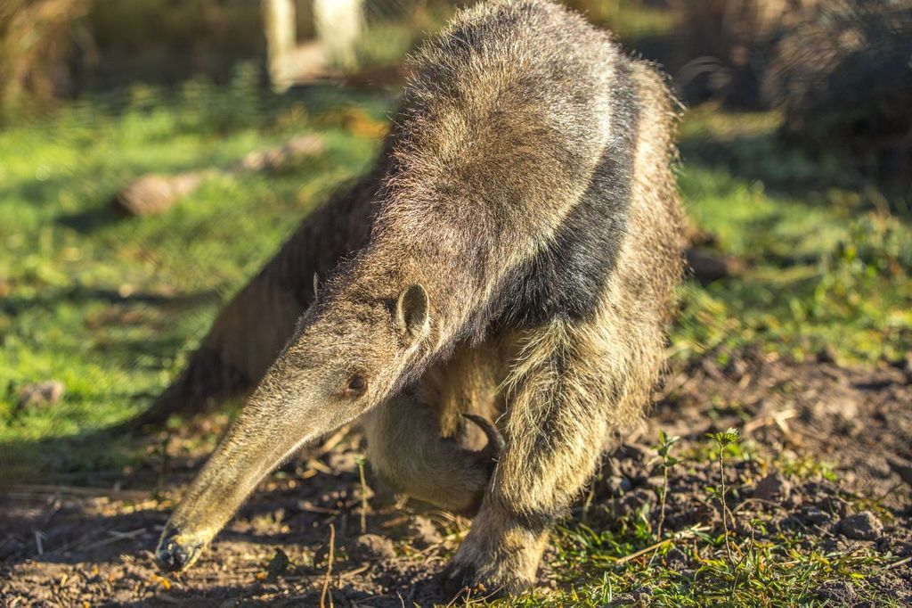
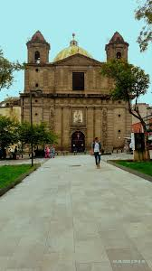
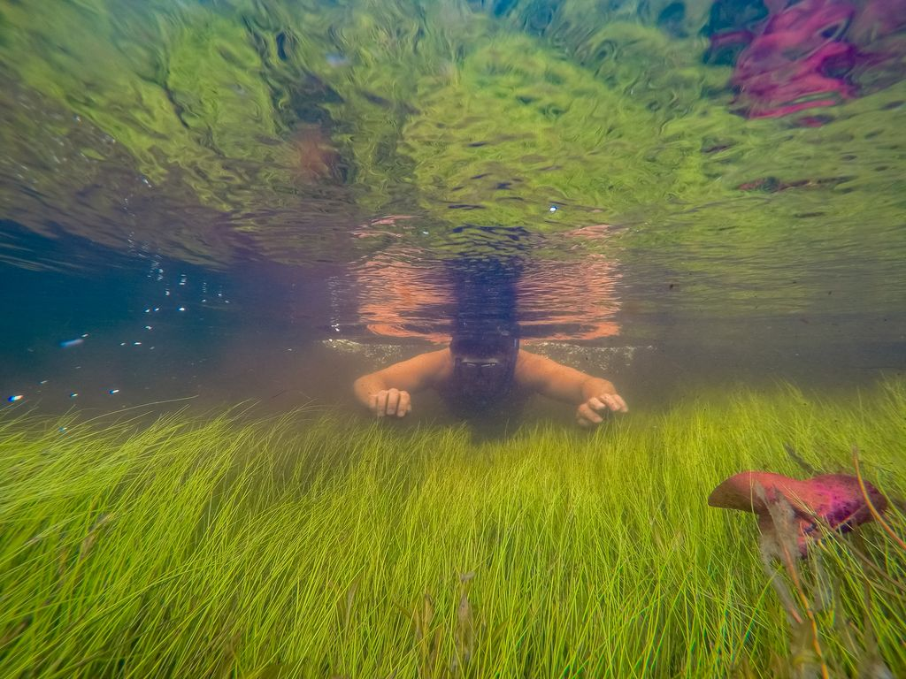

Fortalezas
- Identidad loretana y memoria jesuítico-guaraní.
- Portal San Antonio y sistema Iberá.
- Antecedentes técnicos y turísticos disponibles.
- Fauna emblemática y producción de naturaleza.
Proyecto preliminar de ordenamiento territorial: planificación ambiental, gobernanza y desarrollo local en el eje del Comité Iberá.

Loreto, Departamento San Miguel, Corrientes. Localidad vinculada al sistema Iberá y al Portal San Antonio.
Pequeña escala urbana, identidad local fuerte, borde ambiental sensible y conexión con un circuito ecoturístico provincial.

El modelo combina conservación, restauración, reintroducción de especies, ecoturismo y revalorización cultural.
Portal San Antonio, humedales, fauna emblemática, tradición jesuítico-guaraní, religiosidad popular, oficios y paisaje.
Integrar riesgos hídricos, infraestructura urbana, patrimonio y desarrollo local en una agenda territorial común.




Revisión de antecedentes, mapas, normativa, datos poblacionales, imágenes satelitales y documentos del Iberá.
Entrevistas semiestructuradas, observación directa, inventario territorial, mapeo de actores y cartografía social.
Validación de problemas, vocaciones del territorio, matriz FOAR y priorización de acciones.
Hoja de ruta de OT: agenda de problemas, mapa de actores, cartera inicial de proyectos y condiciones de factibilidad.

Ordenar Loreto es construir una agenda situada para decidir en común cómo articular ambiente, comunidad, patrimonio, servicios y economía local.
El Comité Iberá aporta escala, redes y soporte institucional; el proyecto de OT debe traducir esa oportunidad regional en beneficios concretos para el casco urbano y la comunidad loretana.
Bozzano; Gómez Orea; Massiris Cabeza; Crissi Aloranti; Trabajo Final 2026 — UNRC; Gran Parque Iberá; Comité Iberá 2015–2025; Planificación y gobernanza 2019–2029; Ley 25.675.